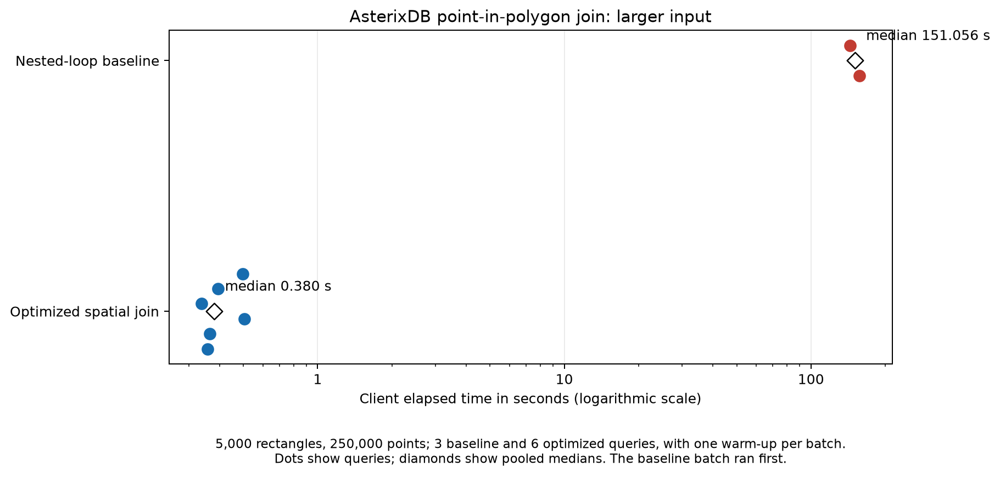
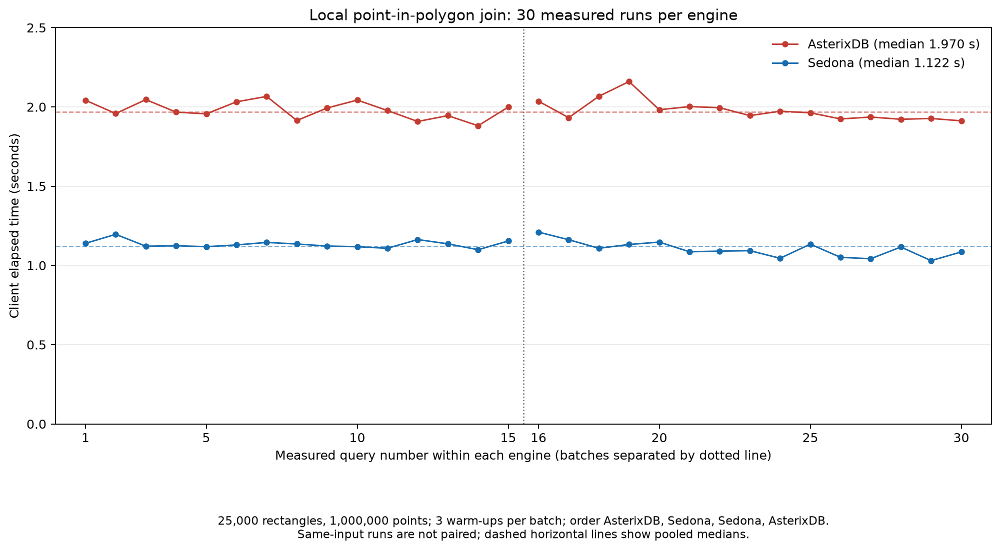

Optimized Spatial Joins in Apache AsterixDB
I implemented partition-based spatial merge (PBSM) joins in Apache AsterixDB, integrating spatial join optimization and distributed execution into the SQL++ query engine. This work was part of a broader effort to integrate spatial and non-spatial data, described in our SIGSPATIAL 2026 paper.
The problem
A spatial join matches records using relationships between geometries rather than equality on a key. A block nested-loop join can evaluate these predicates, but broadcasting one input and comparing pairs does not generally scale when both inputs are large. A bounding-box filter makes each comparison cheaper, yet by itself still considers the pairs. Existing index nested-loop joins can be useful for highly selective inputs, but repeated index probes can become expensive for larger inputs.
Another challenge was integration: a spatial join may sit inside a SQL++ query with filters, projections, and other joins. A two-job implementation that computes a grid first and performs the join separately is awkward to optimize as part of that larger query. I implemented PBSM as an optimizer-visible plan so it could participate in the database's normal planning and execution pipeline.
What I implemented
My contribution added the spatial partitioning hint, optimizer rewrites, a spatial physical operator, and the plane-sweep runtime. For supported geometry predicates, the optimizer introduces an intersection test on minimum bounding rectangles (MBRs) while retaining the original predicate for exact refinement. For a supported distance comparison, it enlarges one MBR by the distance threshold before testing for overlap.
The optimizer's job is to recognize eligible expressions, build the logical plan, and select the physical operator; it does not itself execute the join. The physical operator specifies partitioning and local ordering requirements for both inputs and creates the plane-sweep runtime. In the checked-in implementation, the hint supplies the grid bounds and dimensions; without it, eligible joins can use dynamically computed bounds and a default grid. The commit message describes hint-only activation, but the committed code and documentation include the unhinted path.
How the distributed join works
- Find the grid. In the dynamic path, local and global aggregates compute each input's bounds; the plan intersects them and uses a 100-by-100 grid. A hint can instead provide the bounds and grid dimensions. The hinted bounds need to cover the region containing the matches of interest.
- Partition both inputs. The plan attaches grid information to records, assigns each MBR to its overlapping tiles, and replicates records spanning multiple tiles. Both sides are partitioned by tile ID so corresponding tiles reach the same worker.
- Join locally. The physical plan sorts each input by tile ID and rectangle, primarily by its minimum X coordinate. Workers run a plane-sweep join on the co-partitioned rectangles to generate candidate pairs.
- Deduplicate and refine. A reference-point test selects a canonical tile for a pair that appears in multiple tiles; the original geometry predicate and other conditions then determine the final result.
The dynamic plan computes and distributes grid information within the query plan, rather than requiring a separate driver-side job. It materializes an input branch so the records can be reused after computing the bounds. This lets the spatial join be composed with other operators, including pushed-down filters that reduce the input before the join.
Inside the plane sweep
The local joiner writes the sorted build input to a run file before processing the probe input. It advances through the two ordered streams, buffers potentially overlapping probe rectangles, and checks candidates against build rectangles in the same tile. It removes buffered tuples that can no longer match and checks overlap in both dimensions before emitting a candidate.
The join uses a bounded frame budget. If the probe buffer fills, the joiner processes its buffered tuples against the remaining build run, clears the buffer, and rewinds the build stream to continue. Sorting, run-file I/O, buffering, and possible rereads are therefore part of the execution cost, in addition to the shuffle and exact geometry tests.
For duplicate elimination, the reference point uses the larger minimum X and minimum Y of the two rectangles. The pair is retained only in the tile containing that point. The example plan shows the tile exchanges and local sorts, followed by the spatial join, reference-tile test, and exact predicate.
Predicate and query example
The geometry rewrite handles st_intersects, st_overlaps, st_touches, st_contains, st_crosses, and st_within. A separate rewrite handles supported st_distance comparisons against a constant. These are optimizer rules for eligible inner joins; the presence of a spatial function alone does not guarantee this physical plan.
For example, the following hint chooses a 10-by-10 grid over the specified bounds:
SELECT COUNT(*) FROM ParkSet AS ps, LakeSet AS ls
WHERE /*+ spatial-partitioning(-180.0, -83.0, 180.0, 90.0, 10, 10) */
st_intersects(ps.geom, ls.geom);Correctness and performance tradeoffs
The central correctness challenge is getting the benefits of partitioning without losing or duplicating matches. Replicating a geometry to every overlapping tile preserves candidates across cell boundaries, but can produce the same pair multiple times; the reference-point test removes those duplicates. MBR overlap is only a conservative filter for geometry predicates such as ST_Contains and ST_Intersects, so the exact predicate must still be evaluated. For distance joins, using an unexpanded MBR could miss nearby geometries, which is why the distance rewrite expands one side before the filter.
The grid also creates a performance tradeoff. Too few tiles can leave large local joins and hotspots; too many can increase replication, sorting, and shuffle overhead, especially for large geometries. Spatial skew can concentrate work on a few workers even when the total input is large. The paper's grid-size experiments show poorer performance at both very small and very large grid sizes; a uniform grid should not be assumed to balance every workload.
In contrast, Sedona's typical partitioned range join uses a local spatial index, such as an R-tree, to find candidates. AsterixDB also supports R-tree access paths, but the optimized SPATIAL_JOIN described here uses plane sweep. Neither strategy is universally faster: an end-to-end comparison must include partitioning, sorting or index construction, candidate refinement, and data distribution.
Testing and results
The contribution added optimizer-plan tests for static and dynamic partitioning and spatial predicates, as well as runtime tests for spatial joins. The former check that the optimizer constructs the intended plan; the latter execute queries and check results. The commit also includes spatial left-outer-join runtime tests, distinct from the inner-join geometry rewrite rules.
Local experiment: AsterixDB without and with the spatial join optimization
To isolate the optimization from differences between database versions, I compared two plans on the same AsterixDB build (7b9327d26c2b03ee66c6891f9498c5664cc58ea9). For the baseline, I removed FilterRefineSpatialJoinRuleForSTFunctions from the rule collection in an isolated optimizer class; the normal build retained it. The SQL++ query, input files, and cluster settings were otherwise the same. This is a controlled approximation of execution without the optimization, not a measurement of a historical pre-contribution binary.
The point-in-polygon count query read 5,000 rectangles and 250,000 points from JSON/WKT files generated over a 1,000-by-1,000 region, using uniformly sampled rectangle widths and heights of 5 to 15 units and seed 0x13528f8. A two-node local cluster ran on an Apple M1 Pro with 8 logical CPUs and 16 GiB RAM, using Java 21, compiler parallelism 4, and 64 MB each for sort and join memory. The query supplied a 100-by-100 spatial grid hint over the point region; the baseline plan did not use a spatial grid:
SELECT COUNT(*) AS c
FROM (SELECT st_geom_from_text(b.wkt) AS geom FROM buildings b) b,
(SELECT st_geom_from_text(p.wkt) AS geom FROM points p) p
WHERE /*+ spatial-partitioning(0.0, 0.0, 1000.0, 1000.0, 100, 100) */
st_contains(b.geom, p.geom);The input has 1.25 billion possible rectangle-point pairs. The baseline plan used NESTED_LOOP with a broadcast exchange, while the optimized plan used SPATIAL_JOIN with grid partitioning and plane sweep. Both plans returned 124,687 matches on every execution, agreeing with an independent count.
After one warm-up, the baseline ran three measured queries. The optimized plan ran two separate batches of three measured queries, each after a fresh cluster start and one warm-up. The baseline batch ran first, followed by both optimized batches. Each client-observed time is a complete count query, including parsing, planning, join work, result retrieval, and the HTTP plan response; it excludes engine startup and dataset setup:
- Nested-loop baseline: 143.778, 151.056, and 157.152 seconds; median 151.056 seconds.
- Optimized spatial join: 0.498, 0.394, and 0.339 seconds in the first batch; 0.504, 0.366, and 0.358 seconds in the second. Pooled median 0.380 seconds.
For this input, the optimized pooled median was about 398 times faster (99.75% lower elapsed time). The baseline warm-up took 157.086 seconds; the optimized warm-ups took 1.500 and 1.463 seconds.

The optimized times declined within both batches, so even these measurements may not have reached a stable warm state. There were only three baseline measurements, both plans used the same synthetic input, and the baseline always ran first; caches, JIT compilation, and run order may affect the comparison. The gap is consistent with pruning many pairs before exact geometry tests, but candidate counts and individual stages were not measured. It should not be taken as a general speedup or a comparison with an actual pre-contribution binary.
Local benchmark: AsterixDB and Sedona
I ran a separate single-machine point-in-polygon benchmark on an Apple M1 Pro with 8 logical CPUs and 16 GiB RAM. Both engines read the same JSON files containing WKT geometries: 5,000 randomly placed rectangles and 200,000 random points over a 1,000-by-1,000 region. Rectangle widths and heights were uniformly sampled from 5 to 15 units; the random seed was 0x13528f8. Each side was split across four files. The query counted pairs satisfying ST_Contains(rectangle, point).
Both engines returned 99,612 matches on every run, agreeing with an independent rectangle-containment count. The plans showed AsterixDB SPATIAL_JOIN and Sedona RangeJoin. After one warm-up per engine, the client-observed times were:
- AsterixDB: 0.466, 0.405, and 0.318 seconds; median 0.405 seconds.
- Sedona: 0.889, 0.500, and 0.483 seconds; median 0.500 seconds.
On this input, AsterixDB's median elapsed time was 19% lower, or about 1.23 times faster. The warm-up times were 1.372 seconds for AsterixDB and 3.690 seconds for Sedona. The engines were measured sequentially, not while running joins concurrently.
A larger input and more repetitions
I repeated the experiment with 25,000 rectangles and 1,000,000 points generated using the same distributions, region, and seed. Both engines returned 2,497,991 matches on every run, matching an independent containment count. Each engine had two batches of 15 measured queries, with three warm-up queries before each batch. The order was AsterixDB, Sedona, Sedona, AsterixDB; batches were run sequentially with a fresh engine start.
- AsterixDB: median 1.970 seconds; range 1.881–2.160 seconds. Batch medians: 1.977 and 1.963 seconds.
- Sedona: median 1.122 seconds; range 1.030–1.210 seconds. Batch medians: 1.129 and 1.093 seconds.
Sedona's pooled median was about 43% lower, or 1.76 times faster, on this larger input—the opposite ranking from the smaller experiment. Each measurement is one complete count query, not time per matching pair.

AsterixDB used a two-node local sample cluster, Java 21, compiler parallelism 4, 64 MB each for sort and join memory, and a hinted 100-by-100 grid over the point region [0,1000] × [0,1000]. Some rectangles extended beyond that region. The data was read as external local files. Sedona used Spark 3.5.0 on Java 11 in local[4] mode, eight join partitions, the default KDB-tree partitioner, and the rectangle side as both partitioning and R-tree build side. Broadcast joins and the experimental Sedona plane-sweep option were disabled. The AsterixDB source was at 7b9327d26c2b03ee66c6891f9498c5664cc58ea9; Sedona was at 2caf5820f665d2917ad94e2fc4c0147384907821.
These are end-to-end query timings, including WKT parsing, spatial partitioning, AsterixDB's sorting and plane sweep, or Sedona's R-tree construction and probing, as well as exact refinement and counting. They exclude input generation, engine startup, and dataset/view setup; file-system and JVM caches may be warm. The AsterixDB time includes the HTTP request and plan response, while the Sedona time includes SQL planning and collecting the result.
Interpreting the results
Several differences could contribute to the changing ranking, but the benchmark did not measure individual stages, so it cannot establish which one caused either gap. AsterixDB was given a fixed grid and could avoid deriving the spatial partitioner from the data; Sedona's KDB-tree path analyzes the dominant input and constructs a partitioner. AsterixDB then sorts and sweeps local inputs, whereas Sedona builds and probes local R-trees. Their partition counts, replication, execution pipelines, scheduling overhead, memory settings, and JVM versions also differ. Fixed overhead may matter more for the smaller input; sorting, indexing, replication, and candidate processing may become more significant as the inputs and number of matches grow. These are hypotheses, not measured causes.
The two local inputs produced opposite rankings, and neither isolates plane sweep from the rest of each engine. The larger test's repeated warm runs offer a more stable picture for that input, but they are not independent datasets and cannot establish a general winner. Tests with varied and skewed inputs, matched resource settings, and per-stage measurements would help explain when and why either approach wins.
When not to choose PBSM, and what I would change
PBSM is not automatically the best choice for every input. A small input that fits in memory may favor a broadcast nested-loop join; a highly selective input with a useful spatial index may favor index nested-loop lookup. A costly repartition, a bad grid, skew, or large replicated geometries can outweigh PBSM's savings. Unsupported predicate shapes or cases where the filter cannot safely preserve the original semantics should remain on another valid plan. The exact available alternatives depend on the query and implementation.
Given more time, I would evaluate cost-based selection using filtered cardinality, spatial distribution, expected replication, and index availability; use skew-aware partitioning or adaptive grid sizing; and compare estimated costs with observed per-worker work. I would also add differential tests against a simple baseline for tile boundaries, duplicate-producing geometries, distance thresholds, empty inputs, and null or missing values. These are proposed improvements and tests, not claims about what the original implementation already guarantees.
Paper (ACM SIGSPATIAL, 2026)Best Industry Paper AwardPaper (ACM SIGSPATIAL SpatialAPI, 2021)Source code